A témakör célja, hogy megismerkedjünk a JavaScript-tel.
Mivel a JavaScript alapvetően böngészőbeli szkriptnyelv, ezért a legtöbb példa demonstrálásához a böngészőben található konzolt fogjuk használni.
- Hová helyezzük el a JavaScript kódot a HTML forráskódban?
- A <head></head> elemben. Ez csak akkor javasolt, ha harmadik féltől származó (third-party) script-eket akarunk elhelyezni. Elhelyezhetünk saját script-et is, ám ebben az esetben figyelni kell arra, hogy ne tartalmazzon olyan HTML elemre hivatkozást, ami a body elemben van.
- Bárhol <body></body> elemben. Itt is vigyázni kell, hogy csak előtte lévő HTML elemre hivatkozzon!
- A <body></body> elem legutolsó elemeiként a tökéletes választás. Ezen a helyen már minden elemet látni fog a body-ban.
- Hogyan tudunk információkat közölni a felhasználóval?
- Egy HTML elembe beleírjuk. Ehhez számos metódust szolgáltat a JavaScript. Nézzünk egyet:
- A document objektumnak létezik egy write() metódusa erre a célra. Oda fogja beszúrni a szöveget, ahol a script elem található:
- A window objektum reprezentál egy nyitott ablakot (window) a böngészőben. Ez a globális objektum a JavaScript-ben. Minden más objektum belőle származik. Erről majd később sokkal több szó lesz!
- A window objektumnak létezik egy console nevű jellemzője (property) is (ami maga is egy objektum, mint a body), ami a böngésző konzoljára ír, ami a Fejlesztői eszközök-nél található (F12 gomb lenyomása után).
- Bónuszként említsük meg a window.print() metódust, ami az aktuális oldalt elküldi a nyomtatóra.
- A szkriptek alap építőelemei az utasítások
- értékek (value)
- operátorok (operator)
- kifejezések (expression)
- kulcsszavak (keyword)
- kommentek (comment)
- Néhány szintaktikai észrevétel.
- Pontosvesszővel (semicolon) elválasztva az utasításokat, néha célszerű egy sorban elhelyezni őket.
- A JavaScript-ben egy sor hossza legfeljebb 80 karakter legyen a jobb olvashatóság miatt. Legideálisabb törési pont az operátorok után képzelhető el.
- Érdemes az utasítások "alkotóelemei" köré szóközöket tenni.
- A programon belül utasításokat "csoportosíthatunk" egybe, melyeket egyben szeretnénk végrehajtani. Ehhez a {}-zárójelpárt használjuk, és egy tabulátornyit behúzzuk a sorokat. Jellemzően függvények, vezérlési szerkezetek, osztályok esetén használjuk. Ezekről később lesz szó.
-
Kétfajta érték létezik a JavaScript-ben:
- fix érték, vagy literál (literal)
- változó érték, vagy változó (variable)
- Változók
- Azonosítók
- csak betűvel, _-zal vagy $-lel kezdődhet
- számmal nem kezdődhet
- ezután csak betű, szám, _ és $ szerepelhet
- kis-, nagybetű érzékenység (case sensitivity): lastName és LastName két különböző azonosító
- több szóból álló azonosítók esetén
- Operátorok
- Kifejezések
- Kulcsszavak
- Mire jók a kommentek?
- Emlékeztető szövegek elhelyezése a kódban. Mit csinálunk, mi a célunk a kóddal.
- Leírás más felhasználóknak illetve magunknak, ha később átnézzük a kódot.
- Kódsorok kizárása hibakeresés, tesztelés céljából. A kommenteket nem dolgozza fel a JavaScript motor!
- Mi az a 'use strict';?
Kód a HTML forráskódon belül 1:
A JavaScript kódot a <script></script> elemen belül helyezhetjük el. Ez viszont három helyen szerepelhet a HTML forráskódban:


Kód a HTML forráskódon belül 2:
Események (event) kezelése esetén magába az elembe is írhatunk JavaScript kódot egy HTML attribútumba.


De inkább csak meghívunk egy függvényt:

Kód a HTML forráskódon kívül:
Azonban külső JavaScript állományban elhelyezni a kódot a leginkább bevett gyakorlat. Kiterjesztése .js. Elhelyezése a HTML kódban pontosan ugyanúgy történik mint az előbb, csak a <script src="kulsoForras.js"></script> formában.
A külső JavaScript állományok azért is hasznosak, mert több HTML állományban is felhasználhatóak, és mivel a gyorsítótárba (cache) kerülnek, ezért csak egyszer kell meghívni őket, így gyorsítják a weboldalakat!
Több külső script-állomány csatolásához több script-elemet használunk!
A példában kulsoForras.js=gyakorlas.js:


Fontos megjegyzés:
Ekkor, ha defer boolean attribútumot használjuk, akkor felhívjuk a böngésző figyelmét, hogy a script-et csak a body feldogozása után kezdje el elemezni!


További esetek:


Régebbi kódok esetén találkozhatunk a következő formával:
<script type="text/javascript"></script>
Ez már nem kell, mert a JavaScript az alapértelmezett scriptnyelv a HTML5-ben. A HTML4-ben még nem volt az!
Vagy ezzel:
<script language="javascript"></script>
Ezt sem használjuk már!
"Ősöreg" kódokban:
<script type="text/javascript"><!--...--></script>
Ezzel a HTML komment elemmel a még régebbi böngészők elől rejtették le a script elemben lévő tartalmat, mert nem tudtak vele mit kezdeni!
Tilos használni:
<script src="kulsoForras.js">Valami kód!</script>
Vagy külső állományból dolgozunk, vagy beleírjuk a script elembe kódot, de a kettő együtt nem megy!
Több lehetőség is a rendelkezésünkre áll. Nézzük a szokásos 'Hello World!' kiíratást.


Megjegyzés:
A document a HTML body elemének megfelelő DOM (Document Object Model) elem, objektum. Ezt használja a JavaScript, hogy hozzá tudjon férni meghatározott elemekhez az weboldalon.
 használata")
 használata")
Megjegyzés:
Ha a document.write() metódust azután hívtuk meg, hogy az oldal betöltődött, akkor törölni fogja az egész tartalmat! Ezért csak tesztelési célra használjuk!
 használata")
 használata")
A body objektum is hozzátartozik, és elhagyható előle:
window.body.write() === body.write()
Létezik neki egy window.alert() === alert() metódusa kiíratás céljára. Ez egy kis pop-up ablakba fogja megjeleníteni a tartalmát:
 használata")
 használata")
 használata")
 használata")
 használata")
 használata")
 használata")
Egy számítógép-program 'instrukcióknak' egy sorozata, amelyet a számítógép hajt végre.
utasítás (statement): szintaktikai konstrukció, parancs, 'instrukció' amellyel végrehajtunk egy cselekvést, műveletet
Az utasítások a következőkből tevődhetnek össze:
Nézzünk néhány példát:
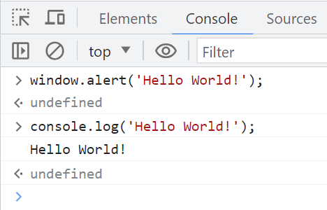
Az undefined a függvény visszatérési értékére utal. Erről később lesz szó.
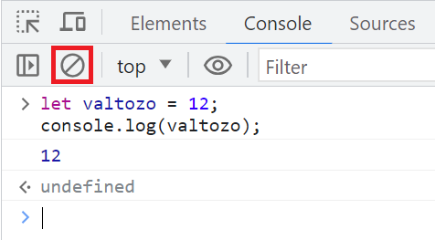
Az áthúzott karika elemmel törölhetjük a konzolt.
A böngésző konzoljába általában egyszerre csak egy utasítást írunk be, majd az enter lenyomásával végrehajtatjuk azt.
Több utasítás esetén használjuk a shift+enter billentyűkombinációt. Ez látható a fenti példában. A végső utasítás után jöhet az enter és a végrehajtás.
Mindig törekedjünk az "egy sor egy utasítás" elv megvalósítására!
A JavaScript-ben az utasításokat;-vel zárjuk le, bár elterjedt az úgynevezett Automatic Semicolon Insertion utasítás lezárás is, amikor rábízzuk a JavaScript motorra az utasítás végének a meghatározását egy sortöréssel.
Példa arra, amikor a sortörés nem egy utasítás vége:
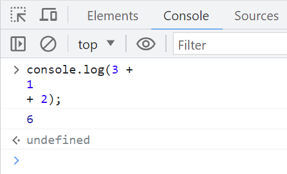
Van amikor nem működik!
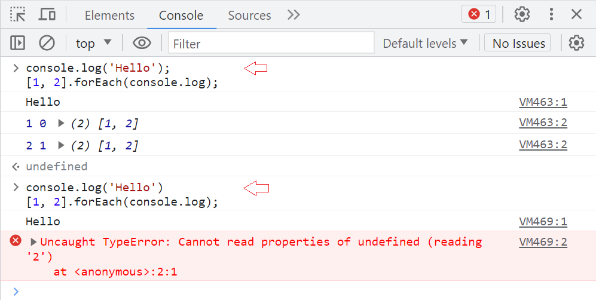
szintaxis (syntax): szabályoknak egy halmaza, amely leírja, hogy egy (JavaScript) program hogyan épüljön fel
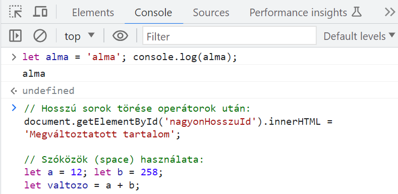
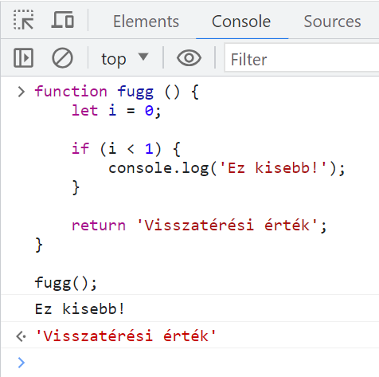
A literálok általában az értékadásoknál szerepelnek az operátor jobboldalán.
A számliterálok lehetnek egészek, vagy törtek és ponttal választjuk el az egész és tizedes részeket.
A szövegliterálokat aposztrófok: 'szöveg', vagy idézőjelek: "szöveg" közé helyezzük el.
utf-8 karakterkészlet használata.
változó (variable): megcímkézett memóriaterület adatok tárolására
A változókat deklarálni kell. Ehhez a JavaScript a következő kulcsszavak egyikét használja: let, const vagy var.
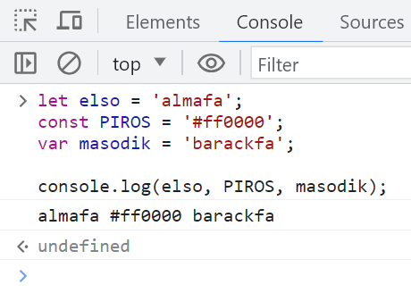
A use strict-nél látni fogjuk, hogy a régebbi JavaScript verzióknál kulcsszavak nélkül is deklarálhatunk változókat. Kerülendő!
A var és let kulcsszavak között különbség van. A var a régebbi és régi böngészőkre írt szkriptekben ajánlatos használni, míg 2015-től jelenik meg a let.
azonosító (identifier): JavaScript nevek, melyekkel felcímkézünk változókat, kulcsszavakat, függvényeket és osztályokat
Szabályok:
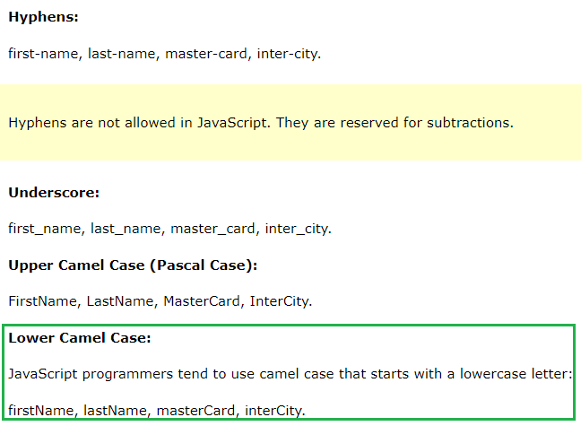
kifejezés (expression): értékekből, változókból és operátorokból összeállított szintaktikai konstrukció, amely meghatároz egy értéket. Ezt hívjuk még kiértékelésnek (evaluation) is.
kulcsszó (keyword): végrehajtandó műveletek azonosítására szolgáló szavak
Például:
let valt = 1973;Ebben az esetben a let kulcsszó létrehozat a böngészővel egy valt nevű változót és feltölteti 1973-mal.
Kommenteket minden számítógépes nyelv esetén használunk. Nem kivétel a JavaScript sem.
Mire jók:
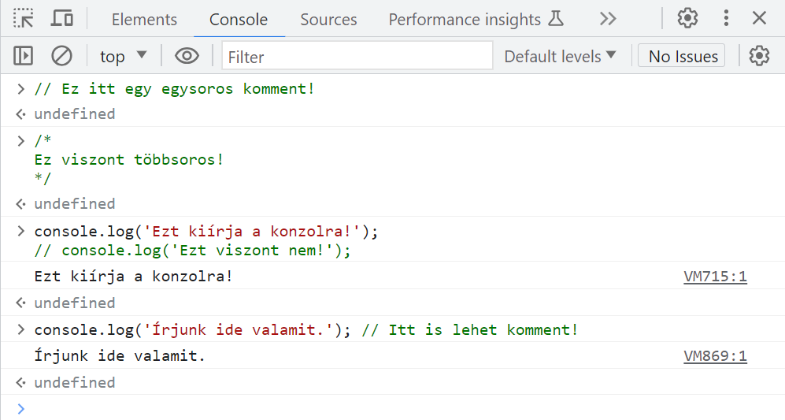
Tilos a többsoros kommentek egymásba ágyazása!
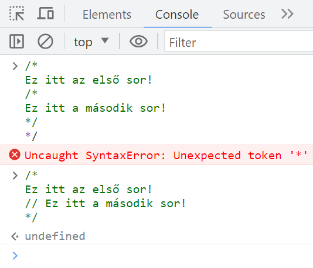
A JavaScript egy folyamatosan változó nyelv. Új tulajdonságok kerülnek hozzáadásra, miközben a régiek nem, vagy csak részben változnak. A régebbi böngészők csak a korábbi JavaScript verziókkal tudnak mit kezdeni, az újabbakkal semmit.
Ezért alapból minden böngésző az ES5 (ECMAScript 5) előtti JavaScript-tel dolgozik, és explicit módon kell "bekapcsolni" az újabb verziókat. Erre jó a 'use strict'; vagy "use strict"; szöveg literál (nem utasítás)! Az IE9 előtti verziók miatt van rá szükség.
A szkript első sora kell hogy legyen (csak kommentek előzhetik meg), bár a később tanulandó függvények első sora is lehet. Ebben az esetben csak az adott függvényen belül lesz aktiválva a "modern JavaScript".
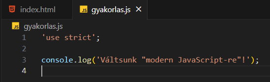
Példák a 'use strict'; használatára:
'Szigorú módban' használat előtt deklarálni kell a változókat!
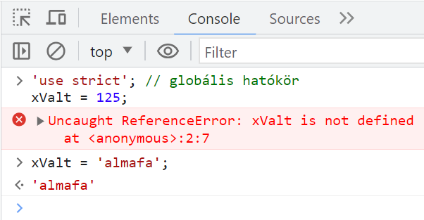
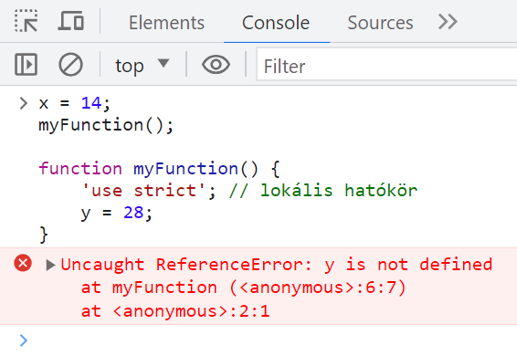
Tilos törölni:
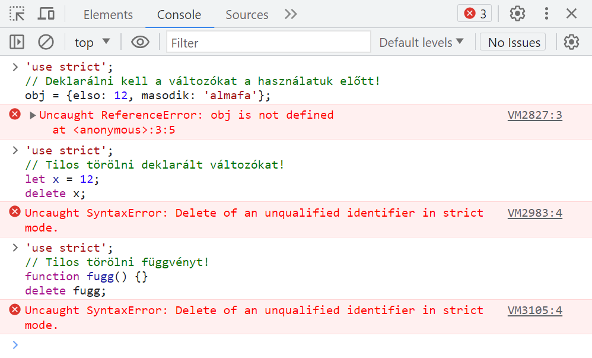
Még néhány "kivétel":
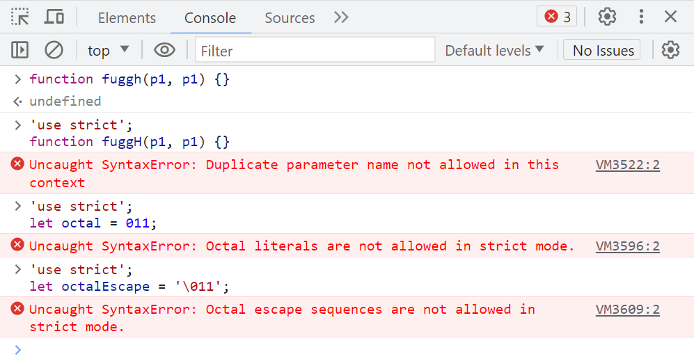
A böngészőbeli konzol alapból nem használja a 'use strict'; módot! Ott is meg kell adni. Minden egyes oldalfrissítés esetén újra kell 'aktiválni', mert elfelejti, hogy 'szigorú módban' van!
Ez biztosan csak a Chrome és Firefox esetén működik. A többi böngésző esetén szükség lehet egy úgynevezett IIFE (Immediately Invoked Function Expression) 'csomagolófüggvényre'!
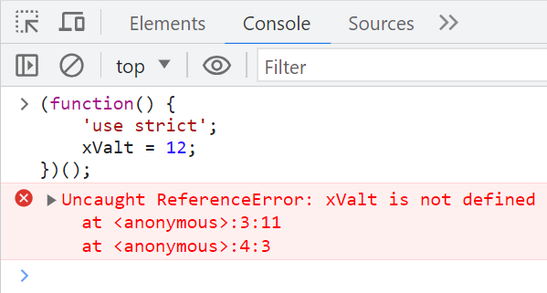
A modern JavaScript által támogatott osztályok (class) és modulok (module) esetén a 'szigorú mód' alapból adott! Ezekkel később foglalkozunk.